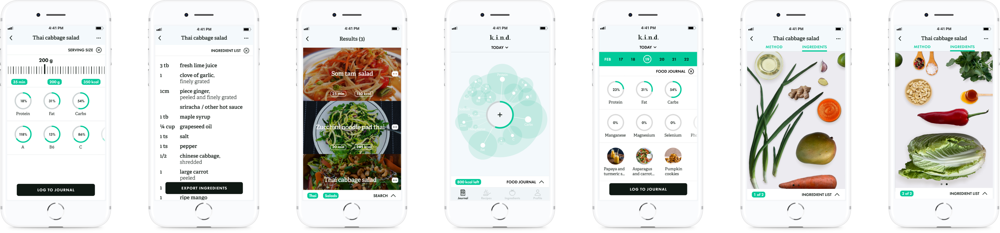
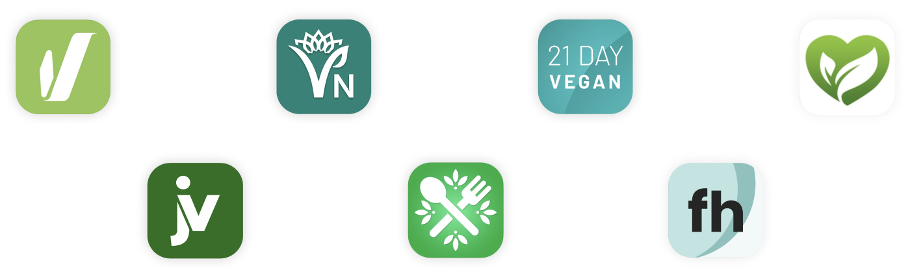
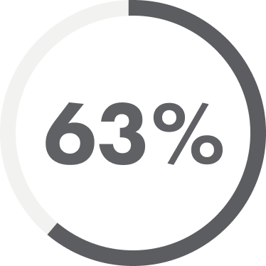
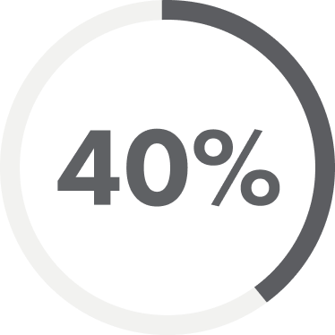
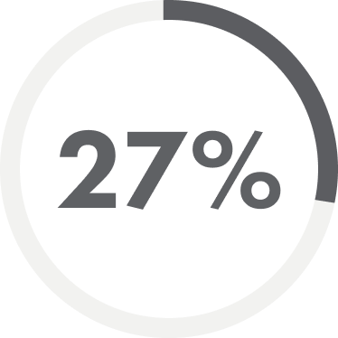
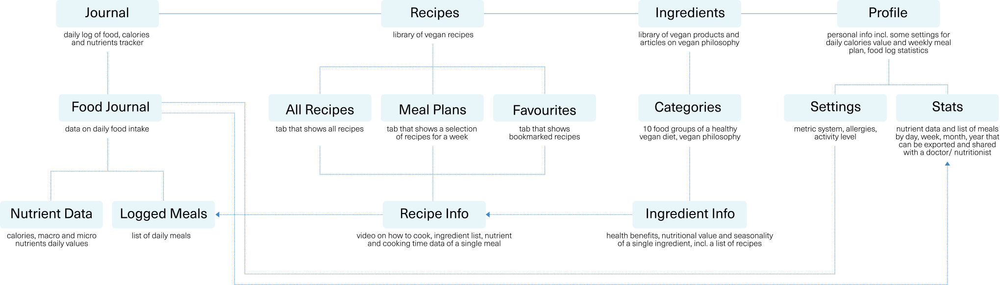

k.i.n.d.
Бесплатная веганская книга рецептов и трекер макро и микро элементов

Overview
k.i.n.d. помогает пользователям узнать больше о растительной диете и предоставляет средства для поддержания здорового и сбалансированного растительного образа жизни.
Мои обязанности
- Branding
- User Research
- Information Architecture
- User Flow
- Wireframing
- Prototyping
Timeline
- Dec 2020–Jan 2021
Tags
- mobile app design
- 2021
Why vegan?
Since intensive animal farming was globalized, the raising and slaughtering of animals both for meat, dairy, eggs, and by-products have become extremely torturous and inhumane. A lot of it has to do with overexploitation of the land as well as a current demand of an ever-growing global population of humans.
Aside from being the primary source of deforestation and carbon dioxide emissions, animal farming requires more human-edible protein for feeding livestock than it produces, which makes it questionable whether we need this branch of agriculture at all.
The ethical, environmental concerns, as well as innovation and rising awareness of the health benefits of plant-based foods, have led to the significant popularity of veganism over the last couple of years. Nevertheless, there is still a common misconception that cutting animal products completely from our diet is risky.
Research
In the initial stage of the project, I conducted competitive research to identify the key features and major pain points of existing vegan apps on the market.

User reviews helped me get an idea of those features that could be improved.
Problem
Lack of apps teaching the vegan philosophy as well as giving access to a variety of plant-based recipes.
No nutrition tracking function integrated into those vegan recipe apps that exist on the market now, which might turn away people who would potentially try a vegan diet but are afraid of nutrient deficiencies associated with it.

Interviewees are afraid of malnutrition due to the meatless and dairyless diet. Most of them are unaware of cancer and cardio-disease risks associated with meat and dairy consumption.

Interviewees, who are regularly physically active, believe that they won't be able to get enough protein to build muscles on a plant–based diet.

Interviewees, who are vegetarians, don't want to give up dairy and eggs as they are afraid that their diet may get boring and repetitive.
Main Features
Information Architecture

Key User Flows
-
Log a meal to journal

-
Find a recipe — A user knows what he wants to cook

-
Find a recipe — A user wants to explore new recipes

High Fidelity Prototype
Design System


Conclusion
The biggest challenge of this app was its data-heavy content. In the beginning, I didn't know how to reveal the data gradually: from a broad overview to the finest details, so that a user won't get too overwhelmed with it. After several iterations, I managed to create quite a minimalist layout without sacrificing the user experience.
Another thing to consider was how to make the process of cooking more enjoyable and easy for a user. After all, for many users who are used to eat meat changing their eating habits can be hard and sometimes even cause frustration. That's why apart from shooting a video for the recipe, I decided to design a visual list of ingredients.